Color
Both use a picker, swatches, and hex. Pond adds Color Tolerance. Eagle’s Accuracy slider appears after a color is set.
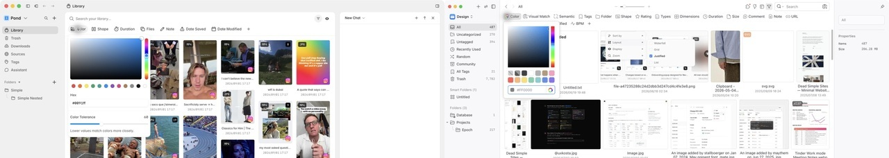
Extracted from live captures. Pond is left, Eagle is right. Matched pairs are one composite. Eagle-only filters show the Eagle popover beside the closest Pond shot, or Eagle alone when Pond has no editor yet.
Both use a picker, swatches, and hex. Pond adds Color Tolerance. Eagle’s Accuracy slider appears after a color is set.

Eagle drop, paste, Choose Image. Pond has the same shell. No Pond popover capture from the Sept 1 pass.
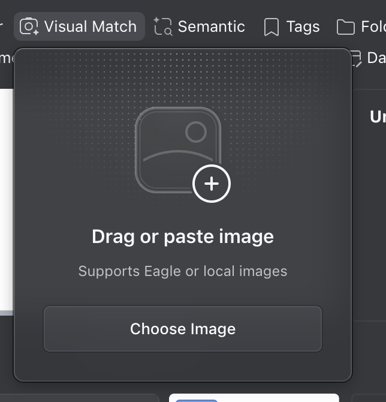
Eagle is a focused textarea. Pond adds Apply and an off-state into Search settings.
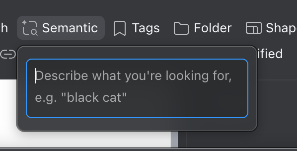
Eagle two-pane picker, counts, right-click exclude. Pond now has groups plus explicit includes any / all / none.
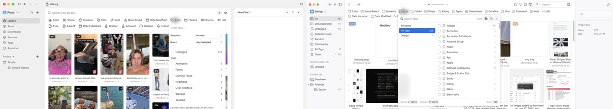
Search, checkboxes, counts. Eagle Uncategorized vs Pond No Folder.
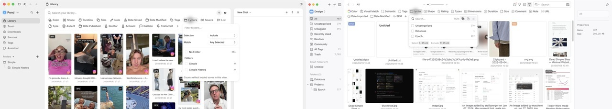
Eagle mixes orientation, ratios, and Custom W:H. Pond is five orientation buckets. Ratios are a separate Aspect filter.
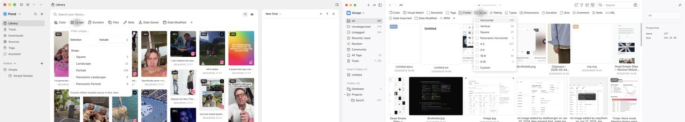
Different models. Eagle lists extensions. Pond lists media families.
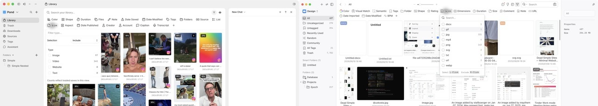
Eagle is live W/H min-max in one popover. Pond Aspect is ratio presets. Width and Height are now separate Pond filters, not in this capture.
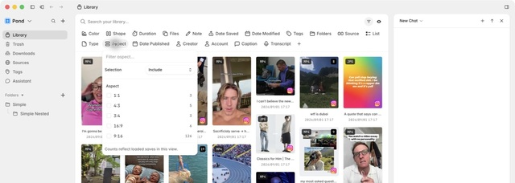
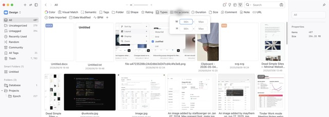
Eagle: min, max, unit, live. Pond: presets plus min/max plus Apply.
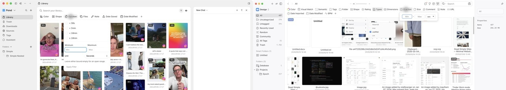
Eagle Size is file bytes with a unit. Pond Files in the pair is attachment count, not the same field. Pond now also has Size.
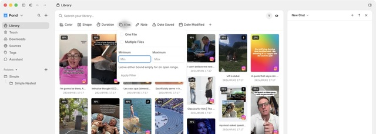
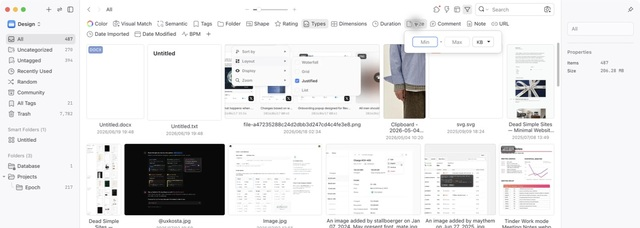
Eagle Yes/No plus keywords. Pond With/Without plus contains.
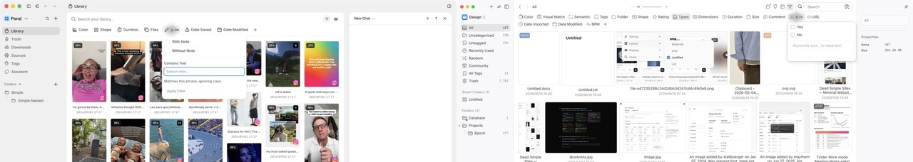
Same relative-date idea. Eagle includes Yesterday and 365 days, with counts. Pond uses Past 3 days, week, month.
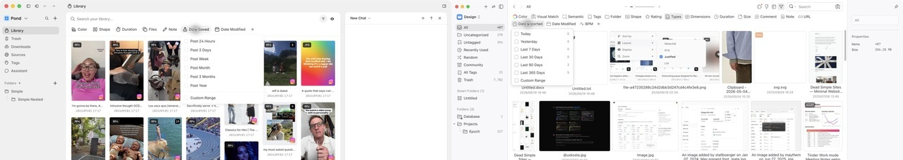
Eagle also groups by month. Pond does not.
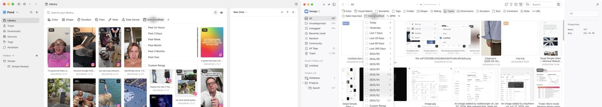